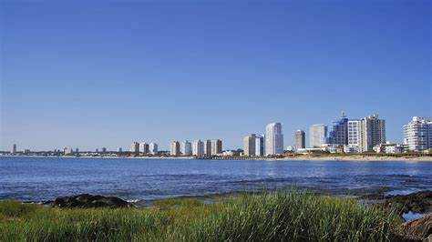

Uruguai, oficialmente República Oriental do Uruguai (em castelhano:
República Oriental del Uruguay, é um país localizado na parte sudeste
da América do Sul. Sua população é de cerca de 3,5 milhões de
habitantes, dos quais 1,8 milhão vivem na capital, Montevidéu, e em
sua área metropolitana. Estima-se que entre 88% e 94% da população
possua ascendência principalmente europeia ou mestiça. A única
fronteira terrestre do Uruguai é com o estado brasileiro do Rio Grande
do Sul, no norte, sendo a segunda menor fronteira do Brasil com outro
país sul-americano. Para o oeste encontra-se o rio Uruguai e a
sudoeste situa-se o estuário do rio da Prata. O país faz fronteira com
a Argentina apenas em alguns bancos de qualquer um dos rios citados
acima, enquanto a sudeste fica o oceano Atlântico. O Uruguai é o
segundo menor país da América do Sul, sendo somente maior que o
Suriname.

Montevideu
Montevidéu tem um patrimônio arquitetônico muito rico e um número
impressionante de escritores, artistas e músicos. O tango uruguaio é
uma forma única de dança que se originou nos bairros de Montevidéu
no final do século XIX. Tango, candombe e murga são os três
principais estilos de música da cidade. A cidade é também o centro
do cinema do Uruguai, que inclui filmes comerciais, documentários e
experimentais. Há duas empresas de cinema que operam sete cinemas,
em torno de dez independentes e quatro cinemas de arte na cidade. O
teatro uruguaio é admirado dentro e fora das fronteiras do país. O
Teatro Solís é o teatro mais proeminente do Uruguai e o mais antigo
da América do Sul.
Punta del Este
Punta del Este é uma cidade do Uruguai, localizada no departamento
de Maldonado. Punta del Este foi considerada o balneário mais
luxuoso da América do Sul pela revista Forbes em 2008, superando
Cartagena das Índias, na Colômbia, e Armação dos Búzios e Balneário
Camboriú, no Brasil. Diversos famosos possuem casa de veraneio no
balneário, como os ex-presidentes argentinos Fernando de la Rúa e
Carlos Saul Menem, o ex- presidente brasileiro Fernando Collor de
Mello, o ex-presidente uruguaio Luis Alberto Lacalle, o ex- ministro
argentino Domingo Cavallo, a cantora colombiana Shakira, o jogador
de futebol espanhol Gerard Piqué, o cantor porto-riquenho Ricky
Martin, o cantor espanhol Julio Iglesias, o ex-jogador argentino de
futebol Diego Maradona, os jogadores uruguaios de futebol Loco Abreu
e Diego Forlán, o tenista argentino Juan Mantin Del Potro, a atriz
argentina Susana Giménez, dentre muitos outros.
Colonia del Sacramento
Colônia do Sacramento é hoje um dos destinos turísticos mais
importantes do Uruguai, recebendo milhares de visitantes por ano. A
localização da cidade é privilegiada para receber turistas, uma vez
que se encontra a uma hora de barco desde Buenos Aires e a duas
horas em carro desde Montevidéu. A oferta turística inclui a cidade
histórica, museus e praias do Rio da Prata.
Blog
Montevidéu: A Joia Oculta da América do Sul
Publicado em
A Ciudad Vieja de Montevidéu é encantadora, com ruas de
paralelepípedos e edifícios coloniais. O Mercado do Porto é famoso
por seu churrasco uruguaio. Não perca a Praça Independência e o
Teatro Solís para um toque cultural.
Punta del Este: O Destino de Praia por Excelência
Publicado em
Punta del Este tem uma vida noturna vibrante com clubes de praia e
discotecas. A gastronomia é variada, desde churrascarias até
restaurantes gourmet.
As ilhas Gorriti e de Lobos são perfeitas para uma excursão, com
opções para snorkel e observação de fauna marinha.